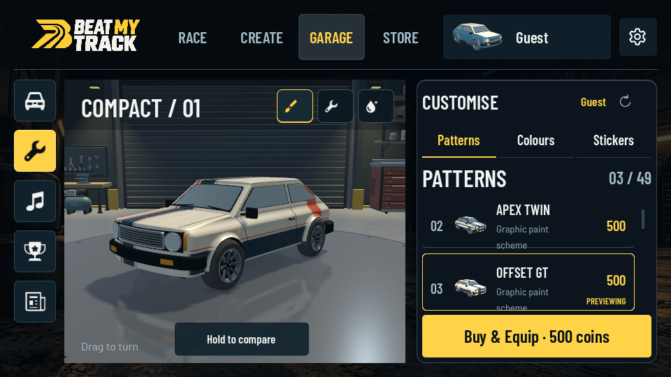

Garage paint list with profile-style cars
Native Windows captures with isolated records. All 49 paint choices use numbered rows, small transparent cars, equipped/preview states and explicit Buy & Equip. The main Garage is the live preview; the profile button retains saved paint. No physical-device test or real purchase.
Implementation and validation · Commands and hashes · Scoped patch
Actual App — 1720 × 900

Actual App — 1280 × 720

Actual App — 960 × 540

Hold to compare
The standalone isolated fixture holds equipped paint while retaining the selected preview. Mouse/touch outside release restores it.

All seven vehicles

Retained initial compact spacing finding
Original wrapping text crossed the row outline; paint rows now allow 100 units and explicit text-containment assertions pass.
